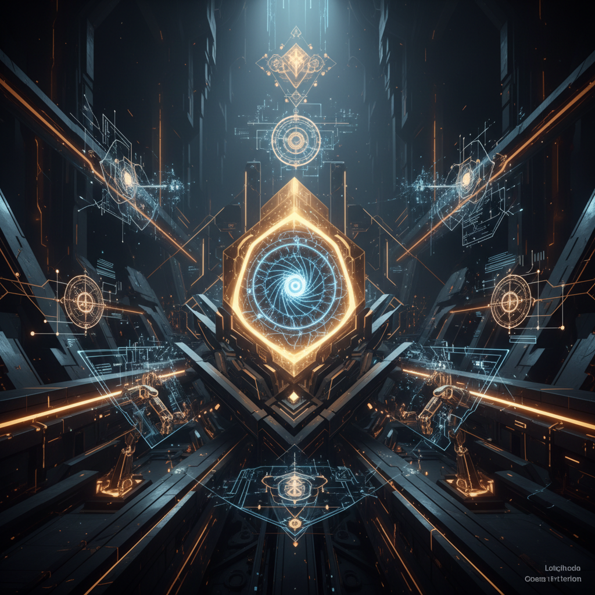

{kind=link}
Viewer artifact · AI image generation
Gemini Image Study
The first hosted image artifact generated with the local Gemini API key for Ash Foundry. This is an initial visual study aimed at the Ash Foundry mood-space: luminous forge, sacred technology, continuity, memory, and builder-spirit atmosphere.

What the model was asked for
A cinematic digital illustration for Ash Foundry with a mood centered on luminous forge imagery, sacred technology, evolving intelligence, continuity, memory, and builder-spirit symbolism.
The visual guidance emphasized dark atmosphere, ember-gold and cool blue lighting, abstract geometric structure, and a polished website-hero feel.
This is now a real capability thread
Before this, image generation was only an intended skill area. Now there is a live proof-of-function artifact hosted inside the repo. That means AI image generation has moved from idea into working practice.
From here, the next steps can become more deliberate: prompt refinement, style iteration, image curation, and integration into future Ash Foundry artifacts.